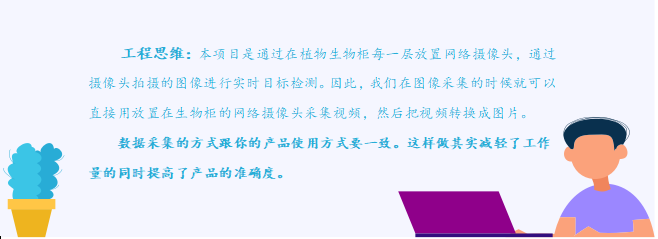

任务一 植物图片采集
【任务描述】
前面章节已经介绍过，要实现目标检测就需要有答案的目标图片进行学习。而我们本项目需要检测四类植物（上海青、生菜、色拉菜、苦棘菜），因此我们需要大量的四类植物的图片，为后续数据标注、机器学习做准备。
【任务实施】
步骤1 获取植物目标视频
目前图片采集的方式有：1.手机（相机）拍摄照片；2.手机（相机）拍摄视频，转换为图片；3.爬虫从网络上获取。本项目到底采取什么样的方式合适呢？

根据工程思维原则，我们选择生物柜部署的网络摄像头拍摄视频，然后把视频转换成图片。

步骤2 把视频变成图片
把视频变成图片方式也有多样，我们可以用截图软件一张张的截图，也可以使用现成的一些视频转图片的软件，或者利用opencv自行写python脚本进行按帧数截图。显然最后一种方法是最方便快捷的。参考代码为：
import cv2
cap = cv2.VideoCapture("C:\\video2img\\veg.mp4")
success, frame = cap.read()
i = 0
while success :
i = i + 1
cv2.imwrite("c:\\test\\frames%d.jpg" % i, frame)
print('save image:',i)
success, frame = cap.read()
最后我们需要重命名图片，因为数据集要求我们对图片进行规范命名。图片重命名为VOC数据集的“000001.jpg”形式。可以写python代码完成，参考代码如下：
import os
path = r"D:\VOC2007\JPEGImages"#路径根据实际修改
filelist = os.listdir(path) #该文件夹下所有的文件（包括文件夹）
count=0
for file in filelist:
print(file)
for file in filelist: #遍历所有文件
Olddir=os.path.join(path,file) #原来的文件路径
if os.path.isdir(Olddir): #如果是文件夹则跳过
continue
filename=os.path.splitext(file)[0] #文件名
filetype='.jpg' #文件扩展名
Newdir=os.path.join(path,str(count).zfill(6)+filetype) #用字符串函数zfill 以0补全所需位数
os.rename(Olddir,Newdir)#重命名
count+=1
此步骤结束后，应该所有图片的格式都为JPG，并且以“000001.jpg”形式命名好放在同一个文件夹里。在这里，我们也提供了一部分的采集图片供大家使用。右方为下载二维码。
本任务实战代码如下,位于/xm2/rw1.ipynb 同学们来运行一下吧